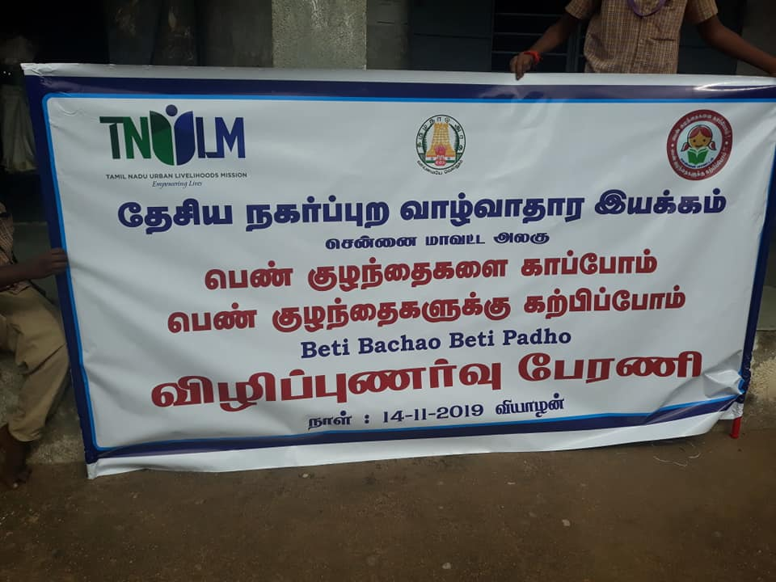
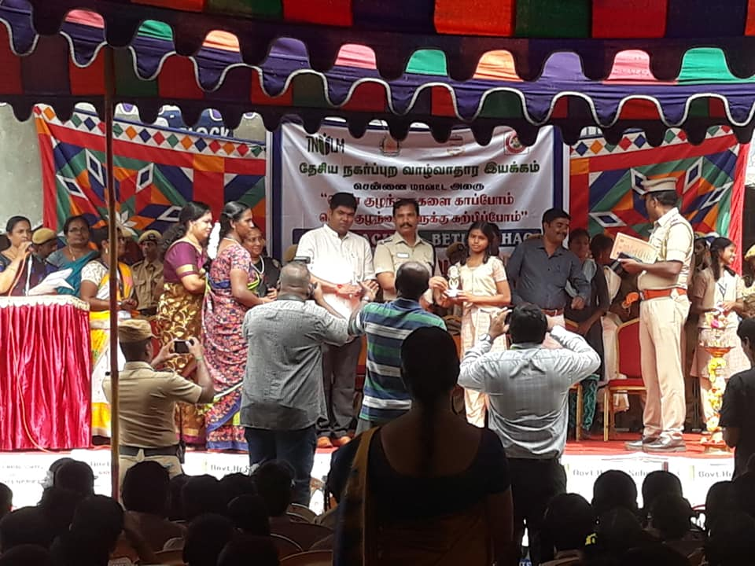
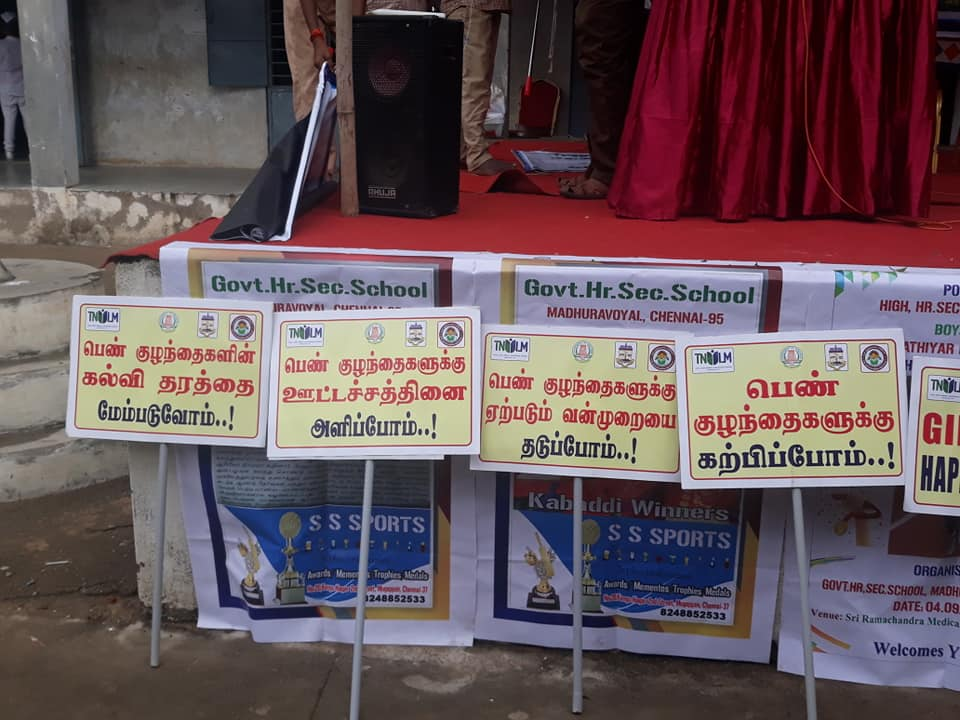

MADURAVOYAL
G.H.S.S
Awareness Activities :
!.........*****♠ ♣ ♠*****.........!
Plant Trees , Save Water , Save Earth has become need of the hour, through which we can save our nature and our planet.
Students can play an important role in improving and strengthening the society.They should take initiative for the betterment of the society. Students participated enthusiastically with the placards and banners displaying messages and raising slogans to sensitize people about the importance of trees and water to sustain healthy life.
!.........*****♠ ♣ ♠*****.........!
Road safety for children is an essential aspect of education Once children start going outside alone or with their friends, parents begin to get frightened for their children. We should educate our kids about traffic rules and road measures to prevent this situation.Here are some essential points kid should know before going on the road.
!.........*****♠ ♣ ♠*****.........!
|  |  |  |
One of the many facts published by the Virtual Knowledge Centre to End Violence against Women and Girls, an initiative of UN Women, states that up to 50% of sexual assaults are committed against girls under the age of 16.
With so much violence being perpetrated against children and a lack of adequate safety measures in most schools and public places, it's important to teach the girl child that it's better to be safe than sorry, especially when she is on her own.
It is important to inculcate a sense of awareness right from a very young age and help your girl child think smart and develop a strong character.